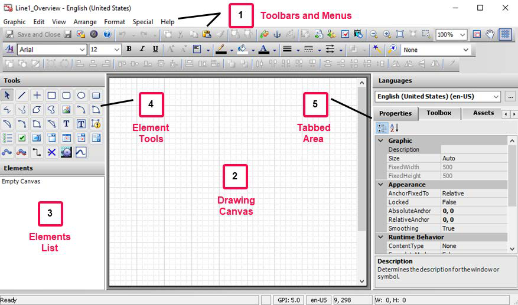
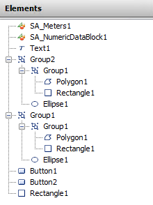
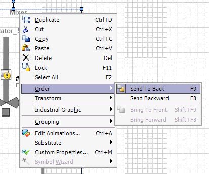
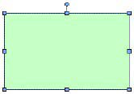
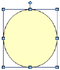
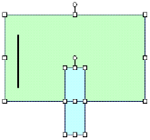
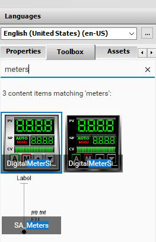
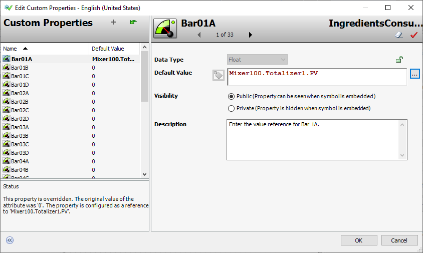
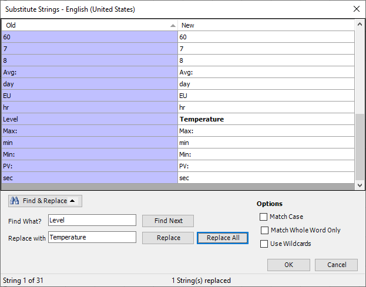
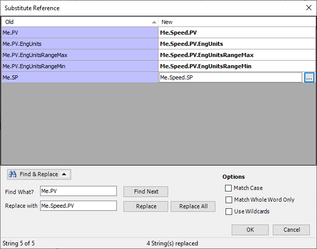

Stock photograph of collaborative tech training workspace showing four people at desktop computer workstations in a modern open-plan office environment
Module 3 — Symbols | Pages 99–112
Do Not Copy 3-3 3-7 3-15 3-45 3-49 3-73 3-81 3-105 3-107 3-117 3-123 3-149 3-155 3-177
Do Not Copy 3-2 AVEVA™ Training Module Objectives Provide a brief overview of graphics Describe situational awareness concepts Introduce the Graphics tab in the IDE Explain using graphics with automation objects Review containment relationships between AutomationObjects Introduce the Graphic Editor Discuss Element Styles Introduce the OwningObject property Introduce various visualization animations and interaction animations Provide a brief overview of custom properties in symbols Provide a brief overview of the scripting environment Introduce ShowGraphic-related functions Describe Galaxy Styles
Do Not Copy 3-3 AVEVA™ InTouch for System Platform 2023 Introduction Symbols are graphics that can be used to customize graphic representations of your processes in a view application. They can be embedded in or linked to automation objects, providing an efficient way to visualize object-specific information in your application, such as processing status, alarms, history and more. Prebuilt libraries of symbols are provided with System Platform, including the Industrial Graphic Library and the Situational Awareness Library. You can use symbols from these libraries in your applications or create your own symbols with the Graphic Editor in the System Platform IDE. Depending on your application development needs, you can create symbols on the Graphics tab or create them directly in automation objects. Some guidelines include: Create symbols on the Graphics tab to use them as reusable, standard symbols. Create symbols in an object template to use them in objects derived from the template. Create symbols in an object instance to use them only in that object instance. Graphics Tab The Graphics tab in the System Platform IDE hosts libraries of symbols, controls, and other graphic-related content that can be used in the Galaxy. Items available on the Graphics tab by default depend on which Galaxy template was used to create the Galaxy. Items on the graphics tab can be organized into a hierarchy of toolsets. Some toolsets are included on the Graphics tab by default, and you can create your own toolsets and sub-toolsets to organize your graphic-related items as needed. To create a toolset on the Graphics tab: Right-click the Galaxy name or a toolset name and select New | Graphic Toolset. The toolset is created and a prompt to name it appears. To create a symbol on Graphics tab: Right-click the Galaxy name or a toolset name on the Graphics tab and select New | Symbol. The symbol is created with a default name, but you can rename it. Once created, you can double-click the symbol to edit it in the Graphic Editor. Symbol Libraries Two symbol libraries are provided with System Platform for all Galaxy types: Industrial Graphic Library contains pre-built, realistic-looking symbols of standard industrial objects. Situational Awareness Library contains pre-built symbols with a simplified look and minimum visual detail, designed to enhance an operator’s situational awareness of current process conditions. This section introduces industrial graphics, including managing them in the System Platform IDE and the out-of-the-box symbol libraries provided with Application Server. It also provides an overview of Situational Awareness concepts.
Do Not Copy 3-4 AVEVA™ Training Situational Awareness Visualization Situational awareness visualization provides an operator with contextual information to allow them to figure out what actions to take. In broad terms, it can be broken down into three levels: the perception of new information, the comprehension of the information, and the projection of the impact the information has on goals. Achieving proper situational awareness can help you make effective decisions to deliver overall business success. In an HMI/SCADA application, situational awareness is a visual design approach devoted to providing operators with the most relevant and necessary information at the right time. The idea is to present users with contextualized and easily interpreted information that is specific to the most important process issues, while filtering out visual noise to keep operators focused on what matters most. Operators see the situation at hand in full context of what is happening in real time, how the current situation links to previous events, and where the process might be headed. This enables operators to more easily move from perception to comprehension and then to projection for better and safer operating conditions. The situational awareness approach also encourages standardization, which helps to eliminate the confusion of an inconsistent use of color and other visual elements. Some of the benefits of incorporating situational awareness principles into visualization applications include faster problem identification, maximized uptime, accelerated alarm recognition, increased operational consistency, safer conditions, and more. System Platform includes features and tools that allow the creation of displays based on situational awareness concepts. Situational Awareness Library Symbols The Situational Awareness Library provided with System Platform contains symbols created with situational awareness in mind. The symbols have a simplified look and provide a minimum of visual detail to efficiently convey their functional purpose and status, without showing extraneous information that could be distracting to operators. By default, symbols in the Situational Awareness Library use a color palette designed to increase the contrast between normal and abnormal operating conditions. Normal operating conditions are shown in largely monochromatic colors, while abnormal operating conditions are shown in more vivid colors.

Do Not Copy 3-5 AVEVA™ InTouch for System Platform 2023 Most Situational Awareness Library symbols are designed as symbol wizards that incorporate multiple visual and functional configurations in each symbol. Selecting a functional configuration of a symbol is a simple matter of selecting options from the symbol’s Wizard Options. One example is the SA_Meters symbol, which can be used as a flow meter, temperature meter, level meter, or other meter types simply by configuring Wizard Options for the symbol. Situational Awareness Library symbols are provided with an extensive set of default custom properties. The properties can be set to show or hide parts of the symbol itself, set a full array of alarm conditions, and show reported values based on the configuration. Situational Awareness Library symbols incorporate a variety of animations that enable operators to quickly assess current process conditions. Some of the animations particularly suited for Situational Awareness Library symbols include Point, Alarm Border, Polar Star, and Sweep Angle animations. Element Styles An element style defines a set of visual properties that determine the appearance of text, lines, graphic outlines, and interior fill shown in graphics. An Element Style applied to a graphic sets preconfigured visual property values that take precedence over a graphic’s native visual properties. For more information, see Section 8 – Galaxy Styles.
Do Not Copy 3-6 AVEVA™ Training
Do Not Copy 3-7 AVEVA™ InTouch for System Platform 2023 Introduction You can use the Graphic Editor to create, configure, and modify symbols. The editor provides a drawing area called the canvas, on which you can build graphics. You can embed basic graphic elements, such as lines, rectangles, curves, and more onto the canvas. Or you can embed symbols from the Toolbox tab, Assets tab, and Templates tab onto the canvas and use the symbols as-is or modify them. The appearance of graphic elements and embedded symbols on the canvas can be changed through their properties or tools available from toolbars and menus. Additionally, you can configure elements and embedded symbols with animations, scripts, custom properties, and more. (1) Toolbars and Menus: Buttons and menu commands for performing various functions, such as saving the symbol, zooming the display, selecting line color, and more. (2) Drawing Canvas: Area where elements are placed and arranged to create a symbol. (3) Elements List: Hierarchical list of elements on the canvas. (4) Element Tools: Collection of elements that you can use to create symbols on the canvas. Includes basic elements, such as lines, rectangles, and so on, as well as other tools and controls. (5) Tabbed Area: Properties tab: Lists properties belonging to selected elements or the embedded symbols on the canvas. When no element is selected on the canvas, this tab lists properties belonging to the symbol itself. Assets tab: Provides access to graphics found in instances. Toolbox tab: Provides access to graphics found in the symbol libraries. Templates tab: Provides access to graphics found in templates. This section describes the Graphic Editor, including an overview of its interface and using it to create graphics.

Do Not Copy 3-8 AVEVA™ Training Canvas The canvas is the drawing area, where elements are placed and configured as need. Canvas Properties When the canvas is selected in the Graphic Editor, the Properties tab updates to show properties of the entire graphic. The properties are organized into categories, such as the following: Graphic: Includes a description of the graphic and canvas sizing properties. Appearance: Includes anchor properties and smoothing properties. Runtime Behavior: Includes content type, faceplate mode, scripts, and zoom percent properties. Custom Properties: Lists custom properties defined for the symbol. Canvas Size By default, the Size property for the canvas is set to Auto, which automatically sizes the graphic by cropping all white space outside of the graphics that appear at runtime. When set to Fixed, the FixedWidth and FixedHeight properties determine the absolute size at runtime. Elements List The Elements list shows a hierarchical list of graphic elements and embedded symbols by name on the canvas. When adding a new item to the canvas, by default, it is listed at the top of the Elements list. The order (z-order) can be manually changed. Elements and embedded symbols can be selected on the canvas or from the Elements list. Select from the Elements list can be particularly useful for selecting one or more elements and embedded symbols that are visually hidden by other elements on the canvas. Elements and embedded symbols can be managed through the Elements list, such as duplicating items, changing the order of selected items, renaming items, grouping items, and editing items within a group. Elements and embedded symbols can be used as references for animations and scripts within the symbol. They are referenced in a format as

Do Not Copy 3-9 AVEVA™ InTouch for System Platform 2023 element, group, or embedded symbol will not update the references automatically. Animations or scripts referencing the old name will need to be updated manually. You can use the list to: See a list of all elements, groups of elements, embedded symbols, and client controls on the canvas Select elements or groups of elements to work with them Rename an element or group of elements. Note that if an element or a group is renamed, any animation references to it are not automatically updated. You must manually change all animation links referencing the old name. Adjust the Z-Order of Elements The z-order of items in the Elements list determines which element or embedded symbol appears on top if they overlap on the canvas. The order also determines how elements of a path graphic connect. You can use the Elements list to see or change the order of the elements. To change the z-order of an element, you can right-click the element, select Order, and then select the desired order position. You can also access Order commands from the Arrange menu. Moving elements forward moves them higher in the Elements list. Moving elements backward moves them lower in the Elements list. Group Elements You can group elements in the Elements list, which allows you to manage the elements as one unit. To group elements, select the elements you want to group, right-click, and then use Grouping commands. You can also access Grouping commands from the Arrange menu. A group is assigned a default name when you create it, but you can rename it. Groups can have properties that are different than the properties of the elements. To group elements, select the elements you want to group, right-click, and use the Grouping command.

Do Not Copy 3-10 AVEVA™ Training Element Properties You can control the appearance of an element, a group of elements, or multiple elements with functions on the toolbar at the top of the Graphic Editor or with properties on the Properties tab. The Properties tab shows properties common to all selected elements. Read-only properties appear in gray and non-default values appear in bold. Properties are organized in categories: Graphic: Includes element name or other identifiers. Wizard Options: Includes options for customizing the visual and function properties of the element. Appearance: Includes parameters related to the appearance of the element, including location, size, orientation, and transparency. Runtime Behavior: Includes element visibility, tab order, and other element behaviors at runtime. Custom Properties: Includes user-defined properties you can associate with elements. Selecting Elements You can select elements by: Selecting them in the Elements list Clicking on them with the mouse Dragging a lasso around them with the mouse When an element is selected, it appears on the canvas with handles that enable control over its size and orientation. If multiple elements are selected, the last select element is the primary element. Other elements within the selection are secondary elements. To select multiple elements, you can press and hold

Do Not Copy 3-11 AVEVA™ InTouch for System Platform 2023 the Shift key and then click the individual elements you want to select. You can also drag a lasso around all of the elements. Embed Symbols Embedding a symbol creates a linked copy of the original symbol. If the original symbol is modified, the changes are propagated to all embedded locations. Existing symbols can be embedded onto the canvas in the Graphic Editor and edited as needed. They can be embedded from the Industrial Graphic Library and the Situational Awareness Library, and from templates and instances available in the Galaxy. In the Graphic Editor, there are several ways of using the Galaxy Browser to select a source symbol to embed onto the canvas. You can click the Embed Industrial Graphic button from the toolbar, select Embed Industrial Graphic from the Edit menu, or right-click the canvas and select Embed Industrial Graphic from a context menu. The Galaxy Browser opens, allowing you to select a graphic. Another way of embedding a graphic is by finding the graphic from the Toolbox, Assets, or Templates tabs available on the right side of the Graphic Editor, and then dragging and dropping the symbol from the preview area onto the canvas. For example, you can navigate to the Situational Awareness Library from the Toolbox tab and select the Meters toolset. All the symbols in that toolset appear in the preview area at the bottom of the Toolbox tab, and you can drag the symbol you want to embed onto the canvas. Selected Element Description Primary Element Appears with color-filled handles Behaves as an active selected element Is the point of reference for all operations, such as aligning or spacing multiple selected elements Secondary Elements Appear with white handles Behave as inactive selected elements Follow the edits made to the primary element


Do Not Copy 3-12 AVEVA™ Training Additionally, the Toolbox, Assets, and Templates tabs include a search feature, allowing you to search for symbols. For example, on the Toolbox tab, you can enter the text meters in the search box to search for items with names that include that search string. Wizard Options When a graphic for which Wizard Options have been configured is selected on the drawing canvas, its Wizard Options properties appear on the Properties tab. Many of the symbols from the Situational Awareness Library have Wizard Options already configured.

Do Not Copy 3-13 AVEVA™ InTouch for System Platform 2023 Custom Properties You can configure custom properties with the Edit Custom Properties dialog box. Right-click an embedded symbol and select Custom Properties. If custom properties are available within the embedded symbol, the Edit Custom Properties dialog box appears. Each available custom property has a defined date type, default value, visibility setting, and a description. The default value is the initial value as defined in the source symbol, which can be overridden with a value, reference, or expression. Available custom properties for a selected symbol and their default value configurations are also listed and editable on the Properties tab in the Graphic Editor. Substitute Strings You can search for and replace strings of any element on the canvas that has the Text property. To substitute strings for an embedded symbol that has text graphics, select the embedded symbol on the drawing canvas and select Special | Substitute Strings from the menu. Or, right-click the embedded symbol on the canvas and select Substitute | Substitute Strings from the context menu. The Substitute Strings dialog box appears.

Do Not Copy 3-14 AVEVA™ Training You can use the basic mode to replace strings in the list, or use Find & Replace functions such as Find What and Replace with, Match Case, Use Wildcards, and others. Substitute References You can search for and replace references used by any element on the canvas. To substitute references for an embedded symbol that has references configured, select the embedded symbol on the canvas and select Special | Substitute References from the menu. Or, right-click the embedded symbol on the canvas and select Substitute | Substitute References from the context menu. The Substitute Reference dialog box appears. You can use the basic mode to replace references in a list or use Find & Replace functions, such as Find What and Replace with, Match Case, Use Wildcards, and others You can use the Galaxy Browser to select a new reference, but the auto-complete function is not available in the Substitute Reference dialog box.


Review the sections above for the main topics, step-by-step procedures, and important configuration details.
This is part of the InTouch HMI layer, which integrates with Application Server's Galaxy for a complete visualization solution.
Module 3 — Symbols. AVEVA InTouch for System Platform 2023 Training.
Next: Lesson L12 — Lab 5 – Building a Process Overview